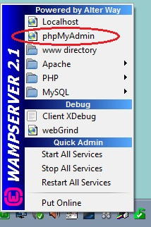
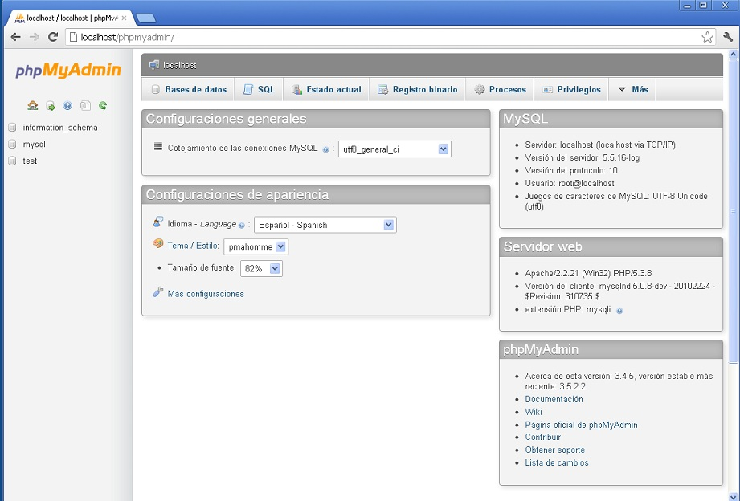
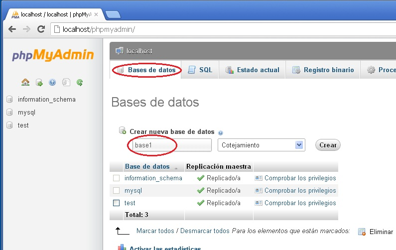
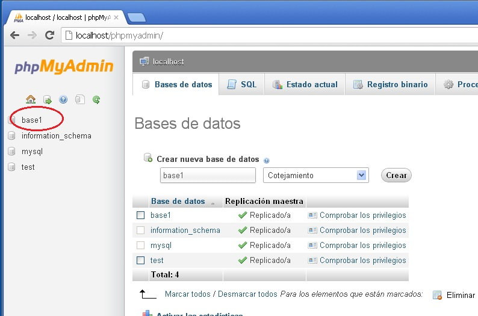
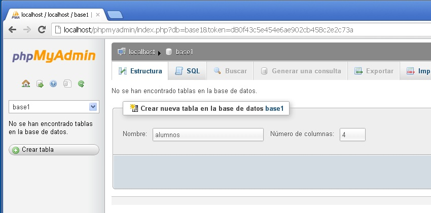
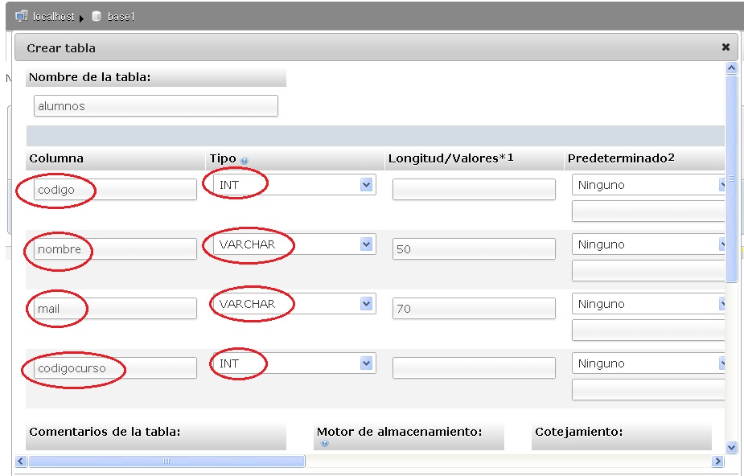
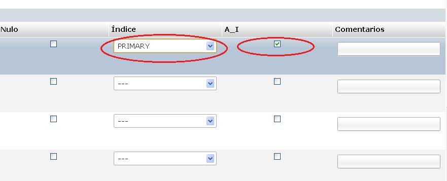
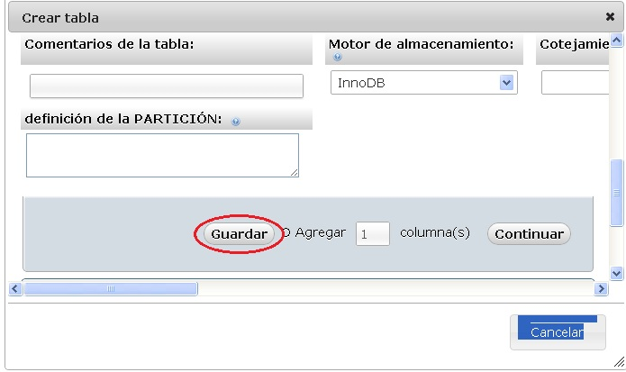

Uno de los empleos principales de PHP es el acceso a una base de datos en el servidor. Las operaciones básicas se hacen empleando como lenguaje el SQL.
PHP implementa distintas funciones según la base de datos a emplear. Existen funciones actualmente para acceder a las siguientes servidores de bases de datos:
- MySQL
- Microsoft SQL Server
- Oracle
- PostgreSQL
- SysBase
- FrontBase
- Informix
- InterBase
- Ingres
- mSQL
- dBase
- SQLlite
El más empleado en la actualidad en la web es el gestor de base de datos MySQL.
Cuando instaló el WampServer en un principio para trabajar con PHP, se instaló el MySQL (recordemos que las letras que forman el WampServer son : W(Windows)A(Apache)M(MySQL)P(PHP)Server).
Para crear una base de datos el WampServer instala también un programa codificado en PHP que nos permite interactuar con el MySQL.
Este programa se llama PHPMyAdmin (como veremos nos permite crear las bases de datos, tablas, índices, usuarios etc.)
Para iniciar el PHPMyAdmin debemos presionar el botón izquierdo del mouse sobre el ícono del WampServer que se encuentra en la bandeja del sistema:
Como podemos ver la interfaz del PHPMyAdmin es un programa que se ejecuta en la web:
Para crear una base de datos procedemos a seleccionar la pestaña "Base de datos" e ingresamos como nombre "base1" y presionamos el botón crear:

Luego de crear la base de datos podemos ver que aparece en el lado izquierdo:

Seleccionamos el nombre nombre de la base de datos "base1" y se actualiza la interfaz de pantalla para que ingresemos el nombre de una tabla y la cantidad de campos que tendrá (crearemos una tabla llamada alumnos con 4 campos):

La estructura de la tabla es:
codigo int auto_increment primary key nombre varchar(50) mail varchar(70) codigocurso int
En el PHPMyAdmin ingresamos:
Es importante también hacer notar que en el campo codigo debemos marcar en Indice el valor "primary" y tildar la columna A_I:
Por último presionamos el botón guardar y ya tenemos la tabla "alumnos" creada en la base de datos "base1":
La tabla almacenará datos de alumnos que desarrollarán cursos de programación en PHP, ASP y JSP.
El código del alumno es de tipo numérico (int) y al indicar que es auto_increment se generará automáticamente por el gestor de base de datos.
Los campos nombre y mail son de tipo varchar (podemos almacenar cualquier caracter) y por último el campo codigocurso representa el curso a tomar por el alumno (1=PHP, 2=ASP y 3=JSP)
El campo clave de esta tabla es el código de alumno (es decir no podemos tener dos alumnos con el mismo código, no así el nombre del alumno que puede eventualmente repetirse)
En los próximos conceptos comenzaremos a ver como desde PHP podemos comunicarnos con la base de datos "base1" y acceder a la tabla "alumnos" para ejecutar los comandos SQL más comunes como pueden ser: select, insert, delete, update etc.